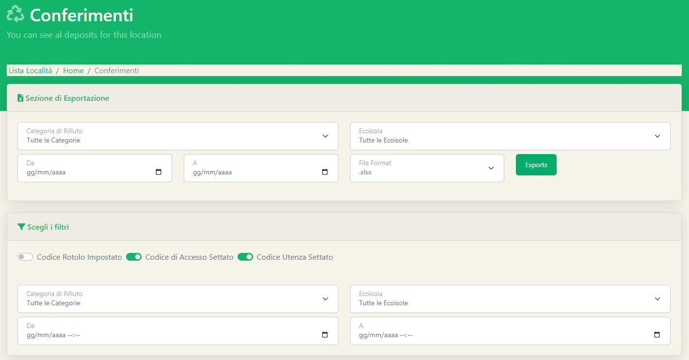
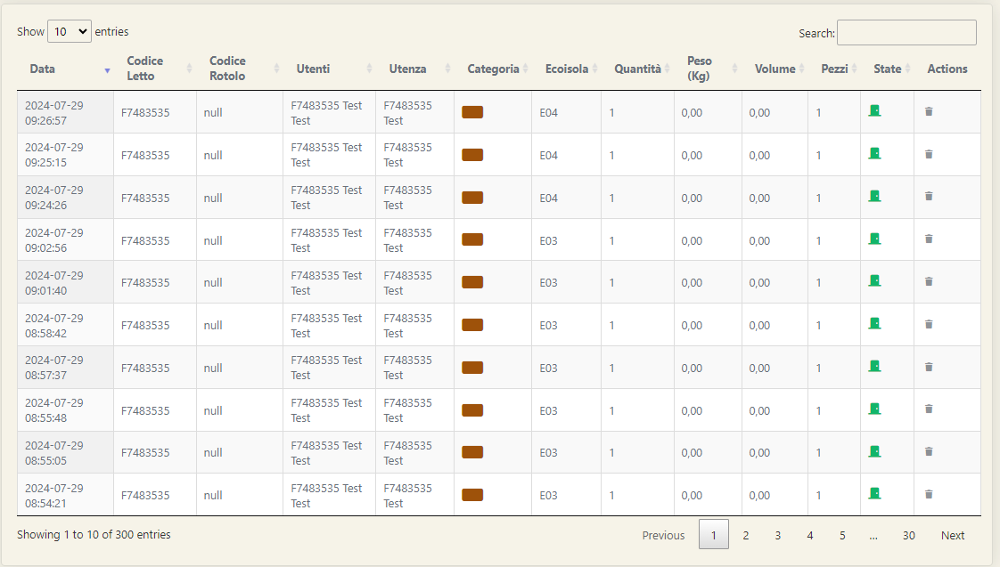

Nelle sezioni precedenti, dedicate alle Utenze e alle Macchine, abbiamo visto come poter visualizzare i conferimenti già filtrati specificatamente per un'utenza o per una macchina. Tuttavia, sul software è presente una schermata apposita per visualizzare tutti i conferimenti eseguiti da tutti gli utenti presso tutte le macchine. Tale schermata, accessibile cliccando il tasto Conferimenti Ecoisola sulla Sidebar, contiene due sezioni utili per l'amminsitratore del software: l'impostazione dei filtri e l'esportazione. 
Sezione di esportazione e sezione di filtraggio sono molto simili tra di loro. In entrambe le sezioni verrà richiesto di indicare alcuni campi attraverso i quali verranno filtrati i dati presenti nella tabella sottostante. 
L'unica vera differenza tra le due sezioni sta nel fatto che, una volta impostati i corretti filtri nella sezione di esportazione, cliccando sul tasto Exports l'amministratore potrà ottenere l'intero dataset di conferimenti presente sulla piattaforma.